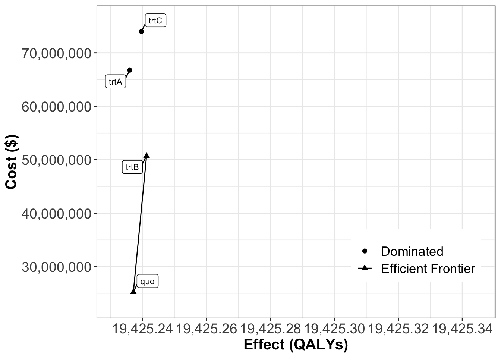

Code
library(knitr)
# knit('MarkovDA.qmd', tangle=TRUE)
# source('MarkovDA.R')
source(purl("MarkovDA.qmd", output = tempfile()))
library(stringr)
options("scipen"=1000, "digits"=2)Based on the last tutorial of Markov Model in R, we will add background mortality using a cause-deleted life table.
library(knitr)
# knit('MarkovDA.qmd', tangle=TRUE)
# source('MarkovDA.R')
source(purl("MarkovDA.qmd", output = tempfile()))
library(stringr)
options("scipen"=1000, "digits"=2)https://www.cdc.gov/nchs/products/life_tables.htm [CDC website]
We are using United States Life Tables(2020) – remember to distinguish the life tables for the male and the female.
Male: https://ftp.cdc.gov/pub/Health_Statistics/NCHS/Publications/NVSR/71-01/Table02.xlsx
Female: https://ftp.cdc.gov/pub/Health_Statistics/NCHS/Publications/NVSR/71-01/Table03.xlsx
| Name | Description |
|---|---|
| qx | Probability of dying between ages x and x + 1 |
| lx | Number surviving to age x |
| dx | Number dying between ages x and x + 1 |
| Lx | Person-years lived between ages x and x + 1 |
| Tx | Total number of person-years lived above age x |
| ex | Expectation of life at age x |
input_file = normalizePath(here("exercise/markov_exercise_phd.xlsx"))
life_table_raw = readxl::read_xlsx(input_file,sheet="Life Table - Male",col_types ="numeric")[-1,]
names(life_table_raw) = c("Age", "qx", "lx", "dx", "Lx", "Tx", "ex")Here we set all our patients are initially 45-yr men with the prostate cancer.
https://vizhub.healthdata.org/gbd-results/[GBD query tool]
GBD results provide the % of deaths due to a specific cause by age (every 5 years) and sex groups.
Using filters like:

The GBD result of death caused by prostate cancer is divided by age groups, which we need to expand to match the original life table.
non-Cause death = all the death * (1 - percent_of_caused_death)
cause_death_m = read.csv("exercise/GBD_2019_prostate.csv") %>%
select(age,val,upper,lower)
cause_death_m1 = cause_death_m %>% filter(str_detect(age, "<")) %>%
mutate(start = 0,
reptimes = as.numeric(str_sub(age,
unlist(gregexpr('<', age))[1]+1,
unlist(gregexpr(' ', age))[1]-1)),
end = start + reptimes - 1)
cause_death_m2 = cause_death_m %>%
filter(str_detect(age,"-") & !str_detect(age, " ")) %>%
rowwise %>%
mutate(start = as.numeric(str_sub(age,1,unlist(gregexpr('-', age))[1]-1)),
end = as.numeric(str_sub(age,unlist(gregexpr('-', age))[1]+1,str_length(age))),
reptimes = end - start + 1)
cause_death_m3 = cause_death_m %>% filter(str_detect(age,"-") & str_detect(age, " ")) %>%
rowwise %>%
mutate(start = as.numeric(str_sub(age,1,unlist(gregexpr('-', age))[1]-1)),
end = as.numeric(str_sub(age,unlist(gregexpr('-', age))[1]+1,unlist(gregexpr(' ', age))[1]-1)),
reptimes = end - start + 1)
cause_death_m4 = cause_death_m %>% filter(str_detect(age, "[+] ")) %>%
rowwise() %>%
mutate(end = max(life_table_raw$Age),
start = as.numeric(str_sub(age, 1, unlist(gregexpr('[+] ', age))[1]-1)),
reptimes = end - start + 1)
cause_death_male = rbind(
as.data.frame(lapply(cause_death_m1, rep, cause_death_m1$reptimes)) %>%
group_by(age) %>%
mutate(Age = start - 1 + 1:n()) %>%
ungroup(),
as.data.frame(lapply(cause_death_m2, rep, cause_death_m2$reptimes)) %>%
group_by(age) %>%
mutate(Age = start - 1 + 1:n()) %>%
ungroup(),
as.data.frame(lapply(cause_death_m3, rep, cause_death_m3$reptimes)) %>%
group_by(age) %>%
mutate(Age = start - 1 + 1:n()) %>%
ungroup(),
as.data.frame(lapply(cause_death_m4, rep, cause_death_m4$reptimes)) %>%
group_by(age) %>%
mutate(Age = start - 1 + 1:n()) %>%
ungroup()) %>%
arrange(Age) %>%
select(Age, val, upper, lower)
maxage = min(max(life_table_raw$Age), max(cause_death_male$Age))
minage_cause = min(cause_death_male$Age)
mlt2020 = life_table_raw[(minage_cause+1):(maxage+1),]
## dx
mlt2020_nonCause = rbind(life_table_raw[1:minage_cause, c("Age","dx")],
data.frame(Age = minage_cause:maxage,
dx = mlt2020[, "dx"] * (1-cause_death_male[, "val"])))
mlt2020_cause = data.frame(Age = minage_cause:maxage,
dx = mlt2020[, "dx"] * cause_death_male[, "val"])
# sum(mlt2020_cause$dx) + sum(mlt2020_nonCause$dx)
# directly using the percent and qx
for (i in 1:nrow(life_table_raw)) {
if (i %in% (minage_cause+1):(maxage+1)) {
mlt2020_nonCause[i, "qx"] = life_table_raw[i, "qx"] * (1-cause_death_male[i - minage_cause, "val"])
} else {
mlt2020_nonCause[i, "qx"] = life_table_raw[i, "qx"]
}
}
# back dx to qx
# for (i in 1:nrow(mlt2020_nonCause)){
# mlt2020_nonCause[i, "qx"] = mlt2020_nonCause[i, "dx"] / sum(life_table_raw[i:nrow(life_table_raw), "dx"])
# }
write.csv(mlt2020_nonCause, "exercise/cause-deleted-mlt.csv", row.names = FALSE)Before we have build the Markov traces without considering background mortality.
Here we will build new Markov traces with one more column – number of death caused by pure background mortality.
# here use the cause-deleted life table
m_M_wBG = death_background = death_cancer = list()
# setting
start_age = 45
for (i in 1:n_strategies) {
#initialization
death_cancer[[v_names_str[i]]] = c(0)
death_background[[v_names_str[i]]] = c(0)
m_M_wBG[[v_names_str[i]]] = matrix(0, nrow = params_sc$n_cycles+1, ncol = v_n_states, dimnames = list(0:(params_sc$n_cycles), v_names_states))
m_M_wBG[[v_names_str[i]]][1,] = c(params_sc$nPop, rep(0,times=5))
for (cycle in 1:params_sc$n_cycles) {
m_M_wBG[[v_names_str[i]]][cycle+1,] = m_M_wBG[[v_names_str[i]]][cycle,] %*% m_P[[v_names_str[i]]] * (1-mlt2020_nonCause[(cycle + start_age),"qx"] %>% pull())
death_background[[v_names_str[i]]][cycle+1] = sum(m_M_wBG[[v_names_str[i]]][cycle,1:5]) * (mlt2020_nonCause[(cycle + start_age),"qx"] %>% pull()) + death_background[[v_names_str[i]]][cycle]
death_cancer[[v_names_str[i]]][cycle+1] = round(params_sc$nPop - sum(m_M_wBG[[v_names_str[i]]][cycle+1,1:5]) - death_background[[v_names_str[i]]][cycle+1],2)
}
m_M_wBG[[v_names_str[i]]] = cbind(m_M_wBG[[v_names_str[i]]][,1:5], matrix(death_cancer[[v_names_str[i]]]), matrix(death_background[[v_names_str[i]]]))
colnames(m_M_wBG[[v_names_str[i]]])[6:7] = c("Death_Cancer", "Death_Background")
}
m_M_wBG$quo
Healthy Stage1 Stage2 Stage3 Remission Death_Cancer Death_Background
0 1000 0 0 0 0 0.0 0.0
1 916 50 20 10 0 0.0 4.2
2 839 79 36 17 16 4.5 8.7
3 768 96 47 22 41 12.1 13.5
4 703 107 56 26 68 22.0 18.5
5 643 113 63 28 95 33.5 23.8
6 588 118 68 30 121 46.1 29.4
7 538 121 71 31 145 59.5 35.4
8 491 123 74 31 166 73.2 41.7
9 449 124 76 31 185 87.1 48.4
10 409 124 77 31 202 101.1 55.6
11 373 124 78 31 216 115.0 63.2
12 340 124 78 31 228 128.8 71.2
13 309 123 78 30 238 142.4 79.6
14 281 121 78 30 245 155.8 88.5
15 256 120 77 29 251 168.9 97.9
16 232 118 76 28 256 181.8 107.6
17 210 116 75 27 258 194.3 117.8
18 191 114 74 27 260 206.4 128.4
19 173 111 73 26 260 218.3 139.3
20 156 109 71 25 259 229.8 150.5
21 141 106 70 24 256 240.9 161.9
22 127 103 68 24 253 251.7 173.6
23 114 100 66 23 249 262.0 185.7
24 103 97 64 22 244 272.1 198.1
25 92 93 62 21 239 281.7 210.8
26 83 90 60 20 233 290.9 223.7
27 74 86 58 19 226 299.8 236.9
28 66 83 55 18 219 308.2 250.5
29 59 79 53 18 211 316.3 264.3
30 52 75 50 17 202 323.9 279.1
$trtA
Healthy Stage1 Stage2 Stage3 Remission Death_Cancer Death_Background
0 1000 0 0 0.0 0 0.0 0.0
1 916 50 20 10.0 0 0.0 4.2
2 839 79 36 17.1 16 4.5 8.7
3 768 95 47 22.1 42 12.1 13.5
4 703 103 54 25.6 74 22.0 18.5
5 643 106 59 27.8 108 33.5 23.8
6 588 105 61 29.0 142 45.9 29.4
7 538 103 61 29.3 175 58.9 35.4
8 491 100 61 29.0 206 72.0 41.7
9 449 96 59 28.3 235 84.9 48.4
10 409 92 57 27.3 262 97.5 55.6
11 373 87 55 26.1 285 109.7 63.2
12 340 83 53 24.8 307 121.3 71.3
13 309 79 51 23.5 325 132.3 79.8
14 281 75 48 22.2 342 142.8 88.8
15 256 71 46 20.9 355 152.7 98.3
16 232 68 44 19.6 367 161.9 108.3
17 210 64 42 18.5 376 170.6 118.8
18 191 61 40 17.3 383 178.8 129.7
19 173 58 38 16.3 388 186.5 141.1
20 156 55 36 15.3 392 193.7 152.8
21 141 52 34 14.3 393 200.4 164.8
22 127 49 33 13.4 394 206.7 177.3
23 114 47 31 12.6 392 212.6 190.2
24 103 45 29 11.8 389 218.2 203.6
25 92 42 28 11.1 385 223.4 217.5
26 83 40 27 10.4 380 228.2 231.7
27 74 38 25 9.7 374 232.8 246.4
28 66 36 24 9.1 366 237.0 261.6
29 59 34 23 8.5 357 241.0 277.3
30 52 32 21 8.0 347 244.7 294.3
$trtB
Healthy Stage1 Stage2 Stage3 Remission Death_Cancer Death_Background
0 1000 0 0 0 0 0.0 0.0
1 916 50 20 10 0 0.0 4.2
2 839 79 36 17 16 4.5 8.7
3 768 96 47 22 41 12.1 13.5
4 703 106 55 26 70 22.0 18.5
5 643 112 61 28 99 33.5 23.8
6 588 115 65 29 127 46.0 29.4
7 538 117 67 30 154 59.2 35.4
8 491 118 68 30 178 72.6 41.7
9 449 118 69 30 200 86.1 48.4
10 409 117 69 30 220 99.5 55.6
11 373 117 69 29 236 112.7 63.2
12 340 116 68 28 251 125.6 71.2
13 309 115 68 27 263 138.2 79.7
14 281 113 67 27 273 150.4 88.6
15 256 111 66 26 281 162.2 98.1
16 232 109 64 25 287 173.7 107.9
17 210 107 63 24 292 184.8 118.2
18 191 105 62 23 295 195.5 129.0
19 173 103 60 22 296 205.8 140.0
20 156 100 59 22 296 215.7 151.4
21 141 98 57 21 295 225.3 163.1
22 127 95 56 20 292 234.5 175.1
23 114 92 54 19 289 243.3 187.5
24 103 90 52 18 285 251.8 200.3
25 92 87 51 18 279 259.9 213.4
26 83 84 49 17 273 267.6 226.8
27 74 81 47 16 266 275.0 240.5
28 66 77 45 15 259 282.1 254.7
29 59 74 43 15 251 288.8 269.2
30 52 71 41 14 242 295.2 284.8
$trtC
Healthy Stage1 Stage2 Stage3 Remission Death_Cancer Death_Background
0 1000 0 0 0 0 0.0 0.0
1 916 50 20 10 0 0.0 4.2
2 839 79 36 17 16 4.5 8.7
3 768 95 47 22 42 12.1 13.5
4 703 104 55 26 72 22.0 18.5
5 643 109 60 28 103 33.5 23.8
6 588 110 63 29 134 46.0 29.4
7 538 110 64 30 164 59.0 35.4
8 491 109 65 30 191 72.3 41.7
9 449 107 64 29 217 85.5 48.4
10 409 105 64 28 239 98.5 55.6
11 373 103 62 28 259 111.2 63.2
12 340 101 61 27 277 123.5 71.3
13 309 98 60 26 292 135.4 79.8
14 281 96 58 25 304 146.8 88.7
15 256 93 57 24 315 157.8 98.2
16 232 91 55 23 323 168.2 108.1
17 210 88 54 22 329 178.2 118.5
18 191 86 52 21 334 187.8 129.3
19 173 83 51 20 337 196.9 140.5
20 156 81 49 19 338 205.6 152.1
21 141 78 47 18 338 213.9 163.9
22 127 76 46 17 337 221.9 176.1
23 114 73 44 16 334 229.4 188.7
24 103 70 43 16 330 236.6 201.8
25 92 68 41 15 325 243.5 215.3
26 83 65 39 14 319 250.0 229.0
27 74 63 38 13 312 256.2 243.2
28 66 60 36 13 305 262.1 257.8
29 59 58 35 12 296 267.6 272.9
30 52 55 33 11 286 272.9 289.0m_M_simplified =
m_M_wBG %>%
map(~ {
for (i in 1:nrow(.x)){
.x[i,6] = .x[i,"Death_Cancer"] + .x[i,"Death_Background"]
}
.x = .x[,1:6]
colnames(.x)[6] = "Death"
.x
}
)
cea_wBG = calculate_icers(
cost = get_ce(l_m_M = m_M_simplified, payoffs = build_payoffs(params_sc), params_sc)$cost,
effect = get_ce(l_m_M = m_M_simplified, payoffs = build_payoffs(params_sc), params_sc)$qaly,
strategies = v_names_str)
format_table_cea(cea_wBG) Strategy Costs ($) QALYs Incremental Costs ($) Incremental QALYs
quo quo 25,224,653 13883 <NA> NA
trtA trtA 66,750,941 14403 41,526,288 521
trtB trtB 50,710,441 14070 <NA> NA
trtC trtC 73,988,389 14220 <NA> NA
ICER ($/QALY) Status
quo <NA> ND
trtA 79,771 ND
trtB <NA> ED
trtC <NA> Dplot(cea_wBG, label = "all", txtsize = 16) +
expand_limits(x = max(format_table_cea(cea_wBG)$QALYs) + 0.1) +
theme(legend.position = c(0.8, 0.2))